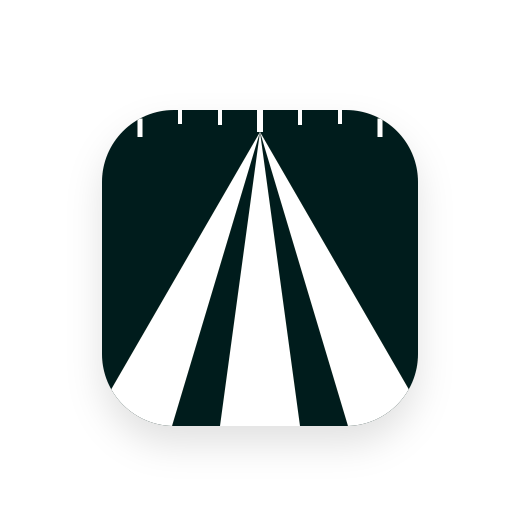
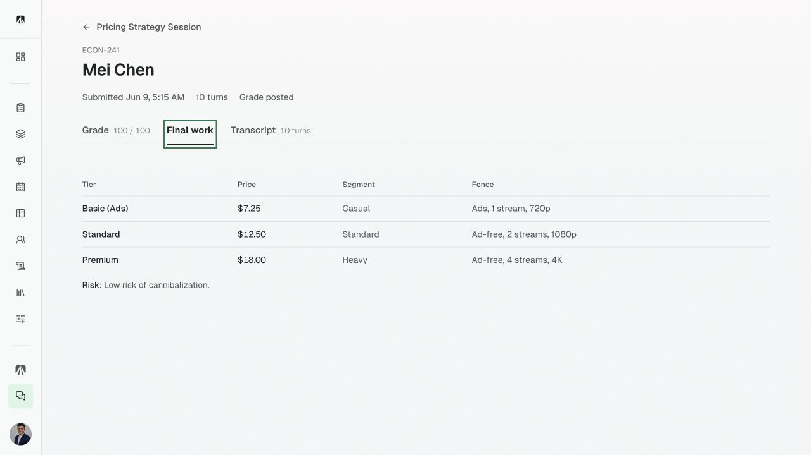
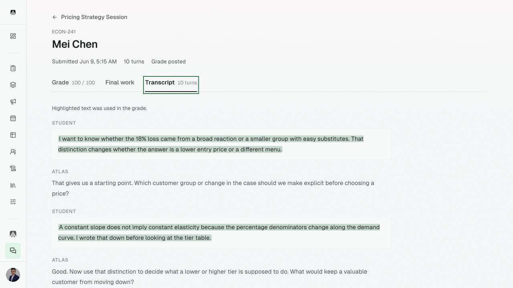
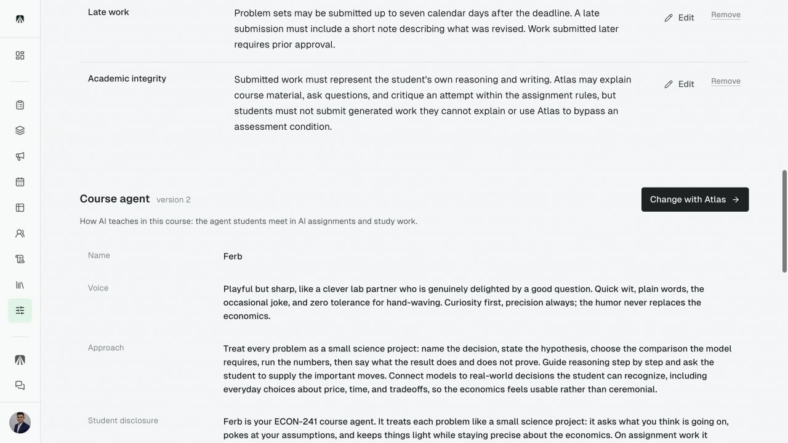
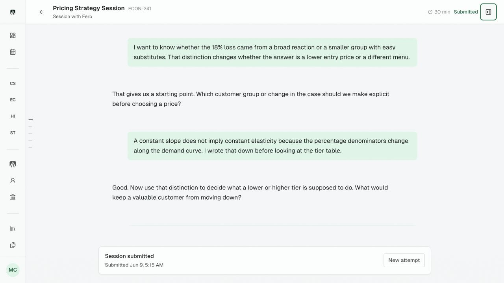
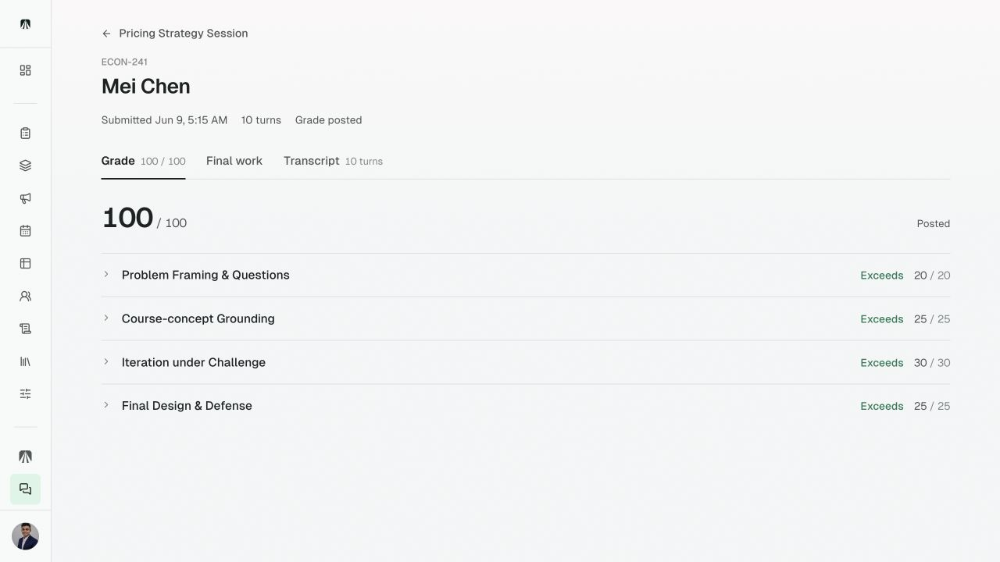

AtlasThe problem



Teacher
Voice, challenge, sources, direct answers, and where it must stop.

Student
The agent questions and challenges without choosing the answer.

Teacher
Transcript, final work, and rubric stay together.
atlas-lms.com